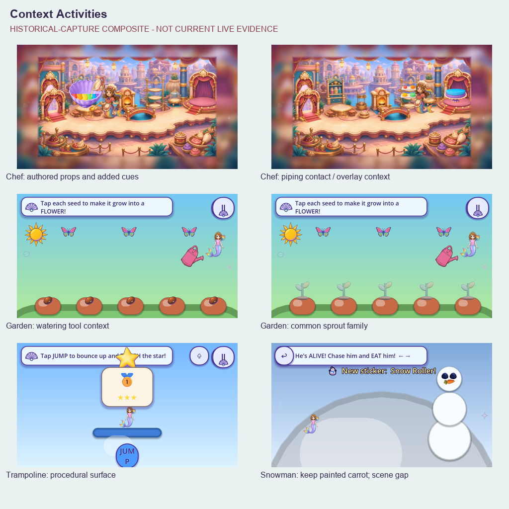
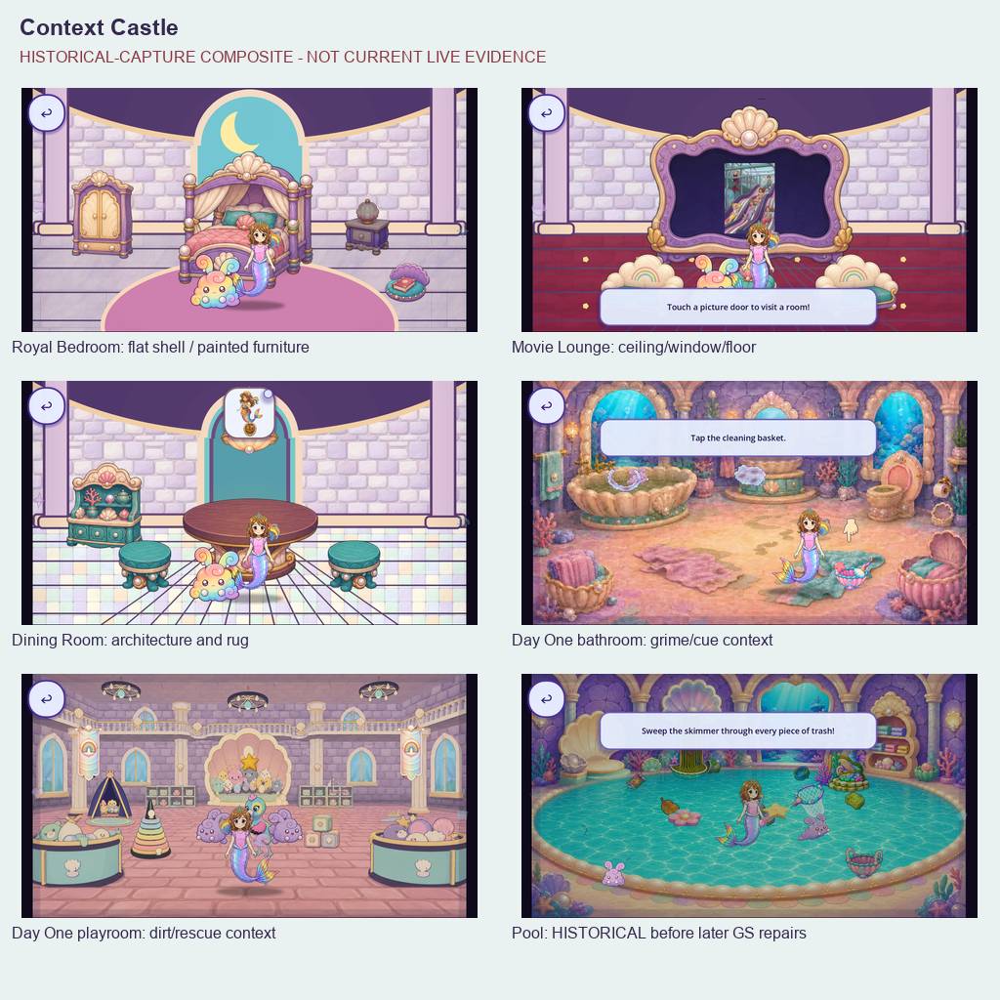
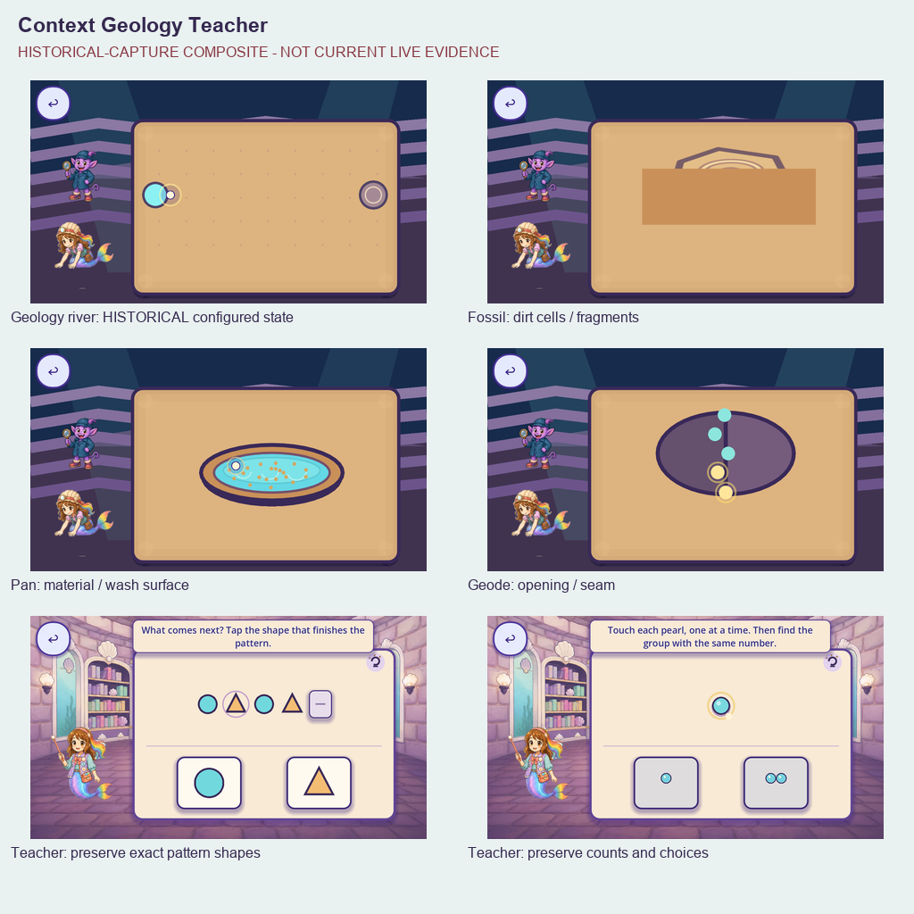
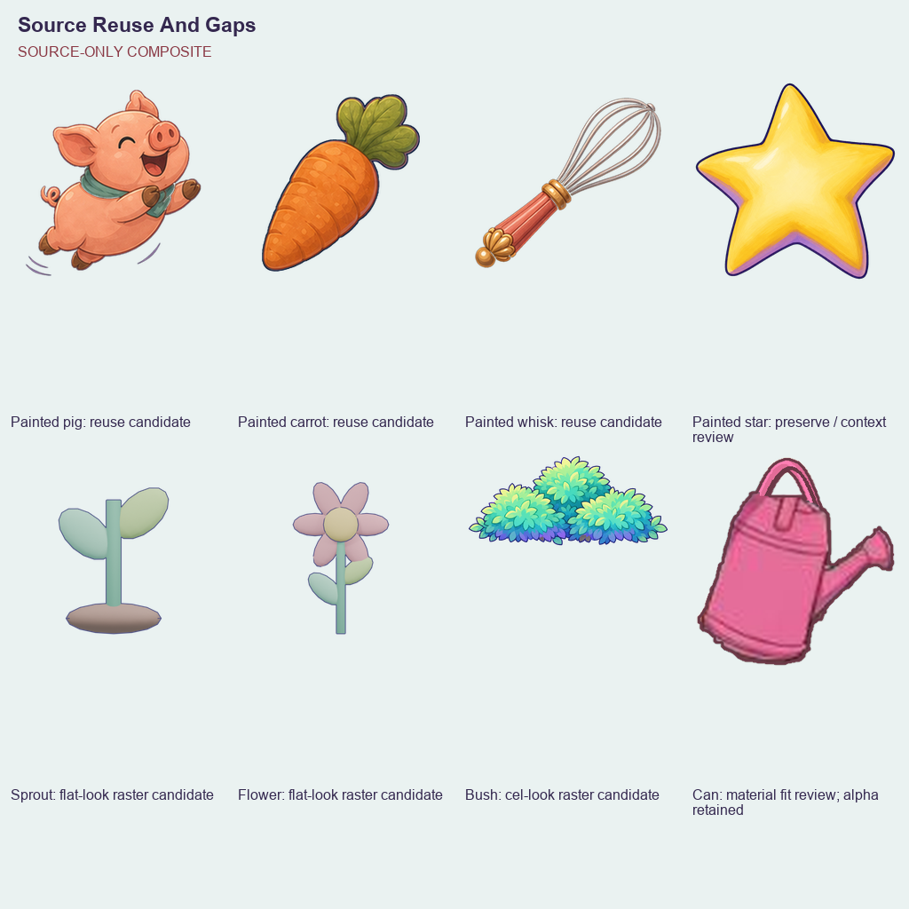

goal_geologist
goal_geologist224 named design/state families remain a lower bound. R2 adds192 current Mobile/Speedy captures: all15 free-play careers and70 actual open phases at two aspects. R3 adds100 Castle/Day One frames. R4 adds62 sharedUI frames (354 cumulative):39/176 partial entries,zero complete;three classified scopes (two functional masks plus40 named flat-art helper instances),366 unresolved. Source/historical boards below retain their original scope. No replacement or acceptance is claimed.
Current R4 sharedUI review · R3 Castle/Day One review · R2 Castle/Opera evidence · Handoff · Audit · Production order · Tally · Manifest




Painted hotspot presentation may suppress source pixels. Visibility must be checked per consumer; format conversion does not repair weak art.
goal_geologist| ID / object | Family / status | Evidence / current source | Context and proposed update |
|---|